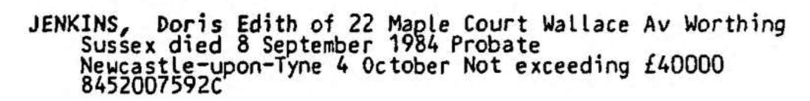

Doris Edith Jenkins (née Wotton) 1923 - 1984
[ Home ] | [ Calendar ] | [ Surnames Index ] | [ Census Index ] | [ Family History ]The child of William Wotton (a mail porter at the general post office) and Catherine Monk, Doris Wotton, the second cousin once-removed on the mother's side of Nigel Horne, was born in Lambeth, London, England on Feb 18, 19231,2,3. She married Samuel Jenkins in Willesden, London, England around May 19644.
During her life, she was living at 30 Bamford Avenue, Wembley, London on Sep 29, 19391; and at 22 Mable Court, Wallace Avenue, Worthing, West Sussex, England in 1984.
She died on Sep 8, 1984 in Worthing3.
Parents
- William Charles was born on Feb 8, 1893
- Catherine was born on Jun 29, 1894
Citations
- 1939 Register - Findmypast (was the daughter of the head of the household)
- England & Wales births 1837-2006 - Findmypast
- England & Wales deaths 1837-2007 - Findmypast
- England & Wales Marriages 1837-2005 - Findmypast
Media
Doris Edith Jenkins - Probate

England & Wales births 1837-2006 - BMD/B/1923/1/AZ/001561/102
England & Wales marriages 1837-2005 - BMD/M/1964/2/AZ/001033/132
England & Wales deaths 1837-2007 - BMD/D/1984/9/74418186
1939 Register - TNA-R39-0949-0949C-017-18
Family Tree

Generated by ged2site. Last updated on Jun 11, 2024